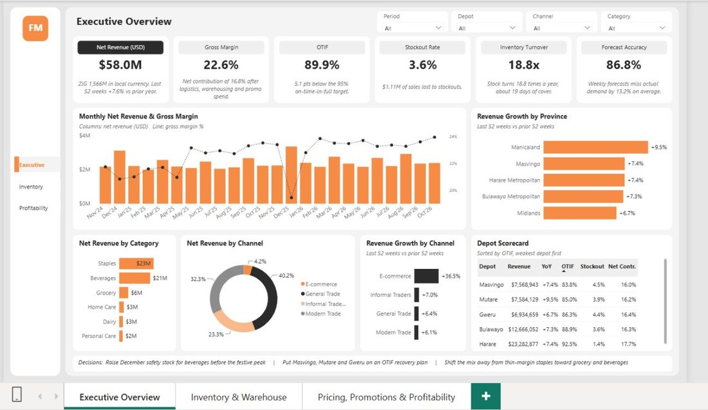
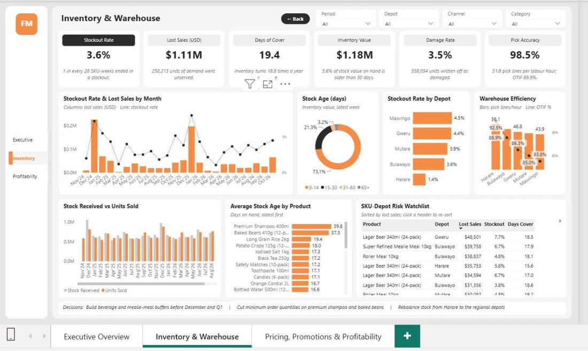

I built a three-page Power BI dashboard on a simulated Zimbabwean FMCG distributor to answer one question:
Why do businesses that grow their sales still struggle to make money?
Sales were up 7.6% to $58M. But beyond the headline numbers, I found three leaks.

Leak 1 — empty shelves
When a product runs out, customers don't wait — they grab a competitor's, and some never come back. In December, the busiest month, twice as many products were out of stock as usual, and Masvingo ran dry almost 3× as often as Harare. The bill: USD 1.11M in sales that never happened.

Leak 2 — discounts that cost more than they earn
The business spent $1.03M on promotions and got back just $543K in extra sales. 14 of 40 campaigns lost money. Big price cuts returned only 45 cents per dollar spent — the winner was the humble in-store display: a smaller discount, better results, the only promotion that paid for itself.

Leak 3 — the bestseller that barely pays
Roller Meal 10kg was the top seller at $7.6M. After costs, only 11.7% of that stayed as profit contribution. E-commerce grew 36.5% — which sounds great, until you see it costs twice as much to deliver as a supermarket order.
The fix is simpler than you'd think
- Stock up before the festive rush, not during it.
- Move promo money from price cuts to in-store displays.
- Support the slow-delivery depots (Masvingo, Mutare, Gweru).
- Check lost sales and promo returns every week, not at month-end.
Revenue tells you how busy you are, not how healthy you are.
The company and figures are fictional, built for portfolio purposes. The pattern — and the fix — is real. Tools: Power BI, Power Query, DAX.